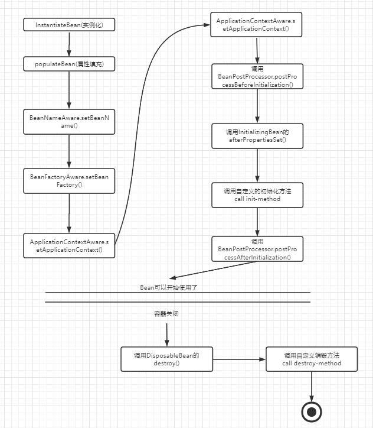
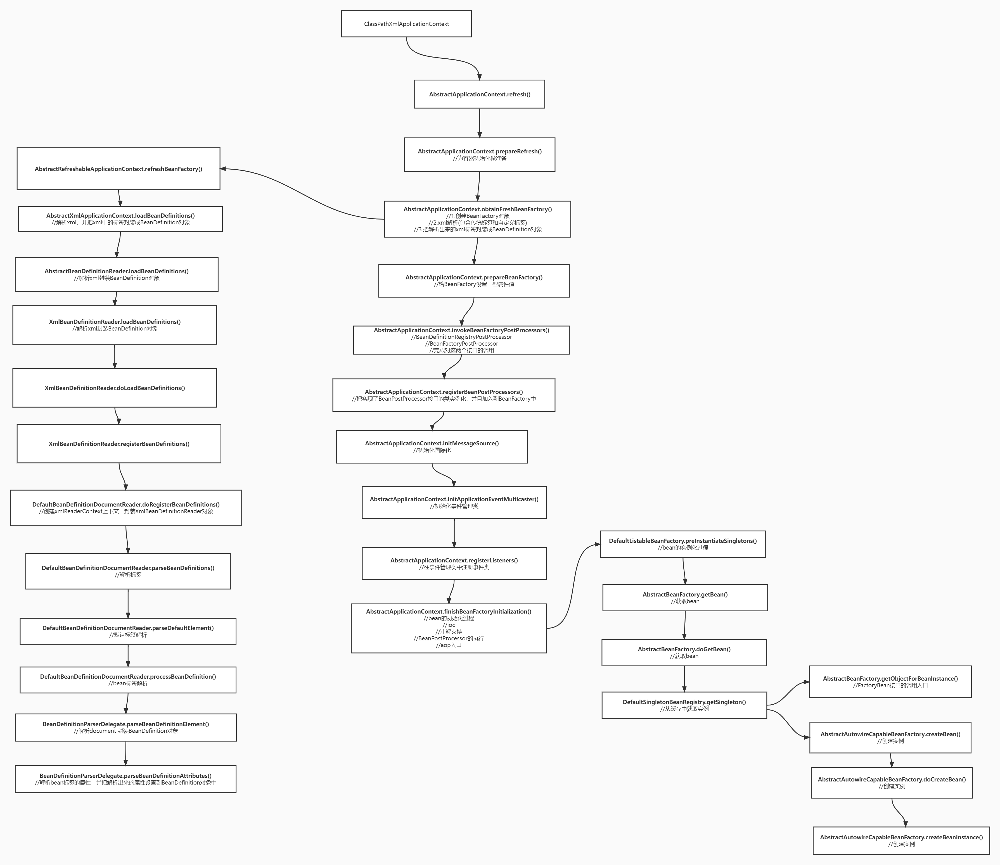

Spring启动上下文核心方法：
AbstractApplicationContext.refresh()
IOC：inverse if control （控制反转），将一个对象的创建、销毁交给spring容器控制
主要作用：解耦
Spring Bean的基本属性详解
id: Bean的唯一标识名。
name: 用来为id创建一个或多个别名。多个别名之间用逗号或空格分开
class：用来定义类的全限定名。只有子类Bean不用定义该属性
parent: 子类Bean定义它所引用它的父类Bean。这时前面的class属性失效。子类Bean会继承父类Bean的所有属性，子类Bean也可以覆盖父类Bean的属性。注意：子类Bean和父类Bean是用一个java类
abstracct(默认为false)：用来定义Bean是否为抽象Bean. 它表示这个Bean将不会被实例化，一般用于父类Bean，因为父类Bean主要是供子类Bean继承使用
lazy-init(默认为default)：用来定义这个Bean是否实现懒初始化。如果为true，它将在BeanFactory启动时初始化所有的SingletonBean。反之，只在Bean请求时才开始创建SingletonBean
autowire(自动装配，默认为default): 它定义了Bean的自动装载方式 1、"no" ： 不使用自动装配功能 2、"byName"：通过Bean的属性名实现自动装配 3、"byType"：通过Bean的类型实现自动装配 4、"constructor": 类似于byType，但它是用于构造函数的参数的额自动组装 5、"autodetect": 通过Bean类的反省机制(introspection)决定是使用"constructor"还是使用"byType"
depends-on(依赖对象): 这个Bean在初始化时依赖的对象，这个对象会在这个Bean初始化之前创建
init-method：用来定义Bean的初始化方法，它会在Bean组装之后调用。它必须是一个无参数的方法
destroy-method:用来定义Bean的销毁方法，它在BeanFactory关闭时调用。它必须是一个无参的方法。只能应用于singletonBean
factory-method：定义创建该Bean对象的工厂方法。用于下面的"factory-bean"，表示这个Bean是通过工厂方法创建。此时,class属性失效
factor-bean: 定义创建该Bean对象的工厂类。如果使用了factory-bean 则class属性失效
MutablePropertyValues：用于封装
ConstructorArgumentValues：用于封装标签的 信息，其实类里面就是有一个map，map中用构造函数的参数顺序作为Key,值作为value存储到map中
MethodOverrides:用于封装lookup-method和replaced-method标签的信息，同样的类里面有一个set对象添加LookupOverride对象和ReplaceOverride对象
Spring解析xml文件过程
通过XmlBeanDefinitionReader.doLoadBeanDefinitions()利用jdk sax解析xml里面的每个元素封装到BeanDefinition对象 详细解析bean标签—–> BeanDefinitionParserDelegate.parseBeanDefinitionElement()
标签 ---> 对应spring.handlers文件中ContextNamespaceHandler
自定义标签的解析逻辑：根据当前解析标签的头信息找到对应的namespaceUri，加载spring所有Jar包的spring.handlers文件并建立映射关系，根据namespaceUri从映射关系中找到对应的实现了NamespaceHandler接口的类，调用类的Init方法（注册了各种自定义标签的解析类），根据namespaceUri找到对应的解析类，然后调用Paser方法完成标签解析
自定义标签的扫描过程：doScanner方法 去扫描基本包的路径下面找class文件，递归找class文件，判断class文件里面是否有includeFilter里面的注解(@Component),封装成BeanDefinition对象
AbstractApplicationContext.invokeBeanFactoryPostProcessors方法调用下面的接口 BeanDefinitionRegistryPostProcessor 在bean的实例化之前调用，可以完成BeanDefinition的操作
postProcessBeanDefinitionRegistry 获取注册器参数
postProcessBeanFactory 获取容器工厂参数
自定义扫描类 实现ClassPathBeanDefinitionScanner接口
BeanPostProcessors的接口实现类在ComponentScanBeanDefinitionParser.registerComponents（注册组件） AbstractApplicationContext.registerBeanPostprocessors 然后在PostProcessorRegistrationDelegate.registerBeanPostprocessors拿到所有实现了BeanPostProcessors接口的类
Bean的生命周期

Spring 创建Bean的过程
AbstractAutowireCapableBeanFactory.createBeanInstance() 实例化factoryMethod方法对应的实例，实例化带有@Autowired的有参构造函数，实例化带有@Autowired的无参构造函数，实例化无参构造函数 getFactoryMethodName —-> 定义了factory-method的属性， 定义和@Bean
实现SmartInstantiationAwareBeanPostProcess，然后重写getEarlyBeanReference方法，可以对bean的对象进行修改或者操作

AOP
面向切面编程，是通过运行期动态代理，实现程序功能统一维护的技术。可以对业务逻辑进行隔离，从而使业务逻辑各部分之间的耦合度降低，提高程序的可重用性，同时提交开发效率
AOP的用途：记录日志，性能监控，事务管理，权限控制，编写插件
创建代理对象有两种：
基于接口的动态代理
提供者：JDK
使用JDK官方的Proxy类创建对象
代理目标需要实现接口
基于类的动态代理
提供者：CGLib
使用cglib的Enhancer类创建代理对象
需要导入asm.jar包
AOP的基础概念
Pointcut(切入点)：需要增强的功能方法就是切入点
Aspect(切面)：切面由切点和增强组成
JoinPoint(连接点)：某个功能或者方法执行前后的位置
Target(目标对象)：需要增强的目标类
Weaving(织入)：将增强的逻辑添加到目标类的具体连接点的过程
Proxy(代理)：一个类被AO增强后，会产生一个代理对象，融合了原类和增强逻辑的代理类
Advice(通知/增强)：增强你的逻辑代码
四种通知/增强类型：
前置通知(before)：用于配置前置通知。指定增强的方法在切入点方法之前执行
后置通知(afterReturn)：用于配置后置通知。指定增强的方法在切入点方法之后执行
异常通知(afterThrowing)：用于配置异常通知，方法抛出异常执行
最终通知(after)：用于配置最终通知，在方法执行完毕的最后执行
环绕通知(around) 用于配置环绕通知。它是 spring 框架为我们提供的一种可以在代码中手动控制增强代码什么时候执行的 方式。
<?xml version="1.0" encoding="UTF-8"?>
<beans xmlns="http://www.springframework.org/schema/beans"
xmlns:xsi="http://www.w3.org/2001/XMLSchema-instance"
xmlns:aop="http://www.springframework.org/schema/aop"
xsi:schemaLocation="http://www.springframework.org/schema/beans
http://www.springframework.org/schema/beans/spring-beans.xsd
http://www.springframework.org/schema/aop
http://www.springframework.org/schema/aop/spring-aop.xsd">
<!--配置业务层实现类-->
<bean id="accountService" class="com.hero.service.AccountServiceImpl"/>
<!--配置日志通知(增强)工具对象，交由Spring ioc容器管理-->
<bean id="logger" class="com.hero.utils.LogUtils"/>
<!-- 配置AOP -->
<aop:config>
<!-- 配置切面：id属性：设置当前切面的唯一标识、ref属性：指定当前切面的增强类(日志增强工具类) -->
<aop:aspect id="loggerAdvice" ref="logger">
<!-- 配置切入点 -->
<aop:pointcut id="logPointcut" expression="execution(public * com.hello.*.AccountServiceImpl.*(..))"/>
<!-- 配置前置增强：在方法执行前执行-->
<aop:before method="beforePrintLog" pointcut-ref="logPointcut"/>
<!-- 配置配置后置通知：在方法执行完毕之后执行(即便抛出异常还是执行) -->
<aop:after-returning method="afterReturnPrintLog" pointcutref="logPointcut"/>
<!-- 配置异常通知增强：在方法抛出异常后执行 -->
<aop:after-throwing method="afterThrowingPrintLog" pointcutref="logPointcut"/>
<!-- 配置最终通知增强：在方法执行后执行 -->
<aop:after method="afterPrintLog" pointcut-ref="logPointcut"/>
<!--配置环绕通知：一个顶四个-->
<aop:around method="aroundPrintLog" pointcut-ref="logPointcut"/>
</aop:aspect>
</aop:config>
</beans>
/** * 日志根据类，业务逻辑中的横切逻辑(通知，增强，) */
public class LogUtils {
//方法之前输出日志
public void beforePrintLog(){
System.out.println("在方法之前执行");
}
//方法之后输出日志
public void afterReturnPrintLog(){
System.out.println("在方法之后执行，有异常就不执行");
}
//方法抛出异常执行
public void afterThrowingPrintLog(){
System.out.println("在方法抛出异常之后执行");
}
//方法的最后执行，不论有没有异常
public void afterPrintLog(){
System.out.println("在方法最后执行，不管有没有异常都执行");
}
//配置环绕通知，相当于自定义通知增强
public Object aroundPrintLog(ProceedingJoinPoint joinPoint){
Object obj = null;
try {
System.out.println("在方法之前执行");
obj = joinPoint.proceed();
//调用方法，这相当于调用被代理类的被增强的方 法。有点类似，method.invoked()
System.out.println("在方法之后执行，有异常就不执行");
} catch (Throwable throwable) {
throwable.printStackTrace();
System.out.println("在方法抛出异常之后执行");
} finally {
System.out.println("在方法最后执行，不管有没有异常都执行");
}
return obj;
}
}
基于注解的aop
开启注解
<aop:aspectj-autoproxy/>
/** * 日志根据类，业务逻辑中的横切逻辑(通知，增强) * @Aspect 注解作用：标记当前类的为日志增强通知切面类 * 作用相当于标签： */ @Component("logger")
@Aspect()
public class LogUtils {
//注解配置切入点表达式，引用只需要调用当前方法即可
@Pointcut("execution(public * com.hello.service.AccountServiceImpl.* (..))")
public void pointcut(){}
//value属性值：可以是切入点表达式，也可以是切入点表达式的引用
//@Before("pointcut()")
public void beforePrintLog(){
//方法之前输出日志
System.out.println("在方法之前执行");
}
//@AfterReturning("pointcut()")
public void afterReturnPrintLog(){
//方法之后输出日志
System.out.println("在方法之后执行，有异常就不执行");
}
//@AfterThrowing("pointcut()")
public void afterThrowingPrintLog(){
//方法抛出异常执行
System.out.println("在方法抛出异常之后执行");
}
//@After("pointcut()")
public void afterPrintLog(){
//方法的最后执行，不论有没有异常
System.out.println("在方法最后执行，不管有没有异常都执行");
}
@Around("pointcut()")//配置环绕通知，相当于自定义通知增强
public Object aroundPrintLog(ProceedingJoinPoint joinPoint){
Object obj = null;
try {
System.out.println("在方法之前执行");
obj = joinPoint.proceed();
//调用方法，这相当于调用被代理类的被增强的方 法。有点类似，method.invoked()
System.out.println("在方法之后执行，有异常就不执行");
} catch (Throwable throwable) {
throwable.printStackTrace();
System.out.println("在方法抛出异常之后执行");
} finally {
System.out.println("在方法最后执行，不管有没有异常都执行");
} return obj;
}
}
循环依赖：多个Bean之间的相互引用
Spring解决循环依赖
Spring采用三级缓存的设计，来解决单例模式下的属性循环依赖问题
注意：解决的只是单例模式下的set属性赋值的循环依赖问题，对于多例bean的和构造方法注入的方式，并不能通过三级缓存设计解决
对于多例的问题：因为每个getBean都会创建新的对象，并不能存入缓存，所以不能解决循环依赖
对于构造方法注入：因为会在实例化的时候才调用
对于设计三级缓存，二级缓存也是可以解决循环依赖
//修改三级缓存源码，不使用三级缓存
org.springframework.beans.factory.support.DefaultSingletonBeanRegistry#addSingletonFactory()
protected void addSingletonFactory(String beanName, ObjectFactory<?> singletonFactory) {
Assert.notNull(singletonFactory, "Singleton factory must not be null");
synchronized (this.singletonObjects) {
// 判断一级缓存中不存在此对象
if (!this.singletonObjects.containsKey(beanName)) {
// 直接从工厂中获取 Bean
Object o = singletonFactory.getObject();
// 不存入三级缓存，直接进入二级
// 添加至二级缓存中
this.earlySingletonObjects.put(beanName, o);
this.registeredSingletons.add(beanName);
}
}
}
使用三级缓存而不使用二级缓存，是因为在二级缓存，AOP注入到其他Bean的时候，不是最终的代理对象，而是原始对象
AbstractAutowireCapableBeanFactory#getEarlyBeanReference()
if (!mbd.isSynthetic() && hasInstantiationAwareBeanPostProcessors()) {
//循环所有Bean后置处理器
for (BeanPostProcessor bp : getBeanPostProcessors()) {
if (bp instanceof SmartInstantiationAwareBeanPostProcessor) {
SmartInstantiationAwareBeanPostProcessor ibp = (SmartInstantiationAwareBeanPostProcessor) bp;
//开始创建AOP代理【重点】
exposedObject = ibp.getEarlyBeanReference(exposedObject, beanName);
}
}
}
//获取AOP代理对象的执行流程
AbstractAutowireCapableBeanFactory#getEarlyBeanReference()
AbstractAutoProxyCreator#getEarlyBeanReference()//获取代理对象
AbstractAutoProxyCreator#wrapIfNecessary()//获取代理对象
AbstractAutoProxyCreator#createProxy()//创建代理对象
ProxyCreatorSupport#createAopProxy()//创建Aop对应的代理对象创建工厂
DefaultAopProxyFactory#createAopProxy()//创建Aop代理对象
return new JdkDynamicAopProxy(config);//创建JDK的动态代理封装对 象
ProxyFactory#getProxy()//获取代理对象
JdkDynamicAopProxy#getProxy()
Proxy.newProxyInstance(classLoader, proxiedInterfaces, this);//JDK动态代理
CglibAopProxy#getProxy()
enhancer.create(constructorArgTypes, constructorArgs);//cglib动态代理